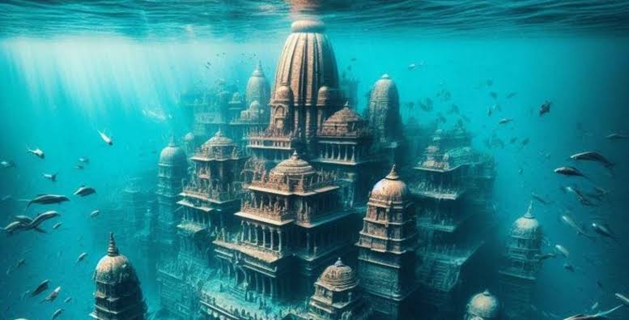

The Lost City hidden in the marine world : DWARAKA
Welcome to the digital world dedicated for exploring the coastal structure, metallurgical secrets, and ancient port innovations of historic Dwarka.
Submerged Anchors
Discover the limestone three-holed anchors engineered for deep-sea trading vessels.
Explore ArtifactsAdvanced Metallurgy
Examine copper and bronze alloys crafted to withstand ocean saltwater exposure.
View StudyReference & Research Sources
For official archaeological reports and historical research, visit the Archaeological Survey of India.